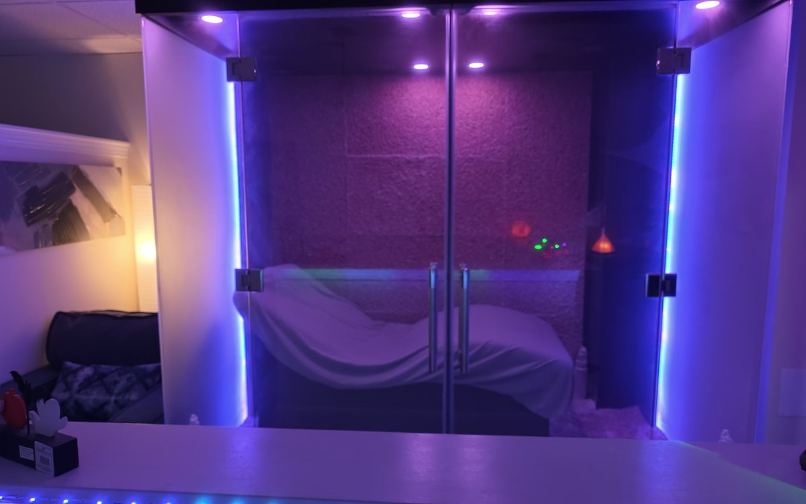
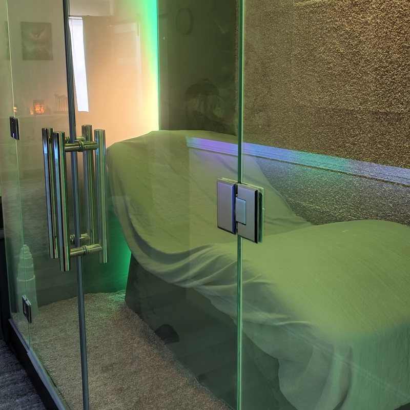
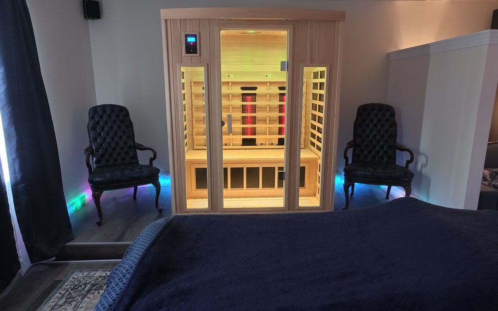

A dedicated salt room and sauna in Portage Lakes.
Step into a room lined floor to ceiling in salt and let yourself breathe easier for half an hour. No appointment prep, no needles, no downtime, just a quiet room and clean air.

Halotherapy, explained simply.
Halotherapy fills a dedicated room with fine, pharmaceutical-grade salt, dispersed gently into the air. You sit back, breathe normally, and the salt settles on your skin and airways over the course of the session. It's dry, comfortable, and fully clothed, closer to sitting in a quiet room than any kind of spa treatment you've had before.
Salt therapy has roots in Eastern European salt caves, where miners were long observed to have fewer respiratory issues than workers in other industries. We've brought that same idea into a modern, purpose-built room here in Akron.

Clients come to the salt room for a lot of different reasons.
Seasonal allergies
Akron's pollen seasons hit hard. Many clients build a salt room visit into their routine each spring and fall.
Sinus congestion
A go-to for clients dealing with lingering congestion, whether from allergies, a cold, or chronic sinus issues.
Skin conditions
Some clients notice a difference with eczema and psoriasis flare-ups after regular sessions.
Stress & sleep
Even without a respiratory reason to be there, a quiet 30 minutes in the salt room is its own kind of reset.
Athletes
Some clients pair the salt room with massage to support recovery and easier breathing during training blocks.
New to wellness
No massage table, no hands-on work required. A gentle way to try Healing Souls for the first time.
Halotherapy is a wellness practice, not a medical treatment. Talk with your physician about any respiratory or skin condition you're managing.
What to expect during your visit.
-
Arrive and settle in
You'll stay fully clothed. We recommend comfortable, breathable clothing.
-
Breathe and relax
Sit back in the salt room for 30 to 45 minutes while fine salt disperses gently through the air.
-
Pair it, or keep it simple
Many clients add the salt room onto a massage. Others prefer it entirely on its own.

Add heat to your visit.
Our sauna is available on its own for $35, or for $25 when you add it to another service. Many clients pair it with the salt room for a slow, quiet hour, or follow a massage with a sauna session to keep the body loose.
Combinations on our menu include Sauna plus Salt Chamber, and Sauna plus Salt Chamber plus Lymphatic Drainage Massage. Ask us when you book if you would like help putting a visit together.
Book the saunaReady to breathe easier?
The salt room books up, especially during allergy season. Reserve your spot online.